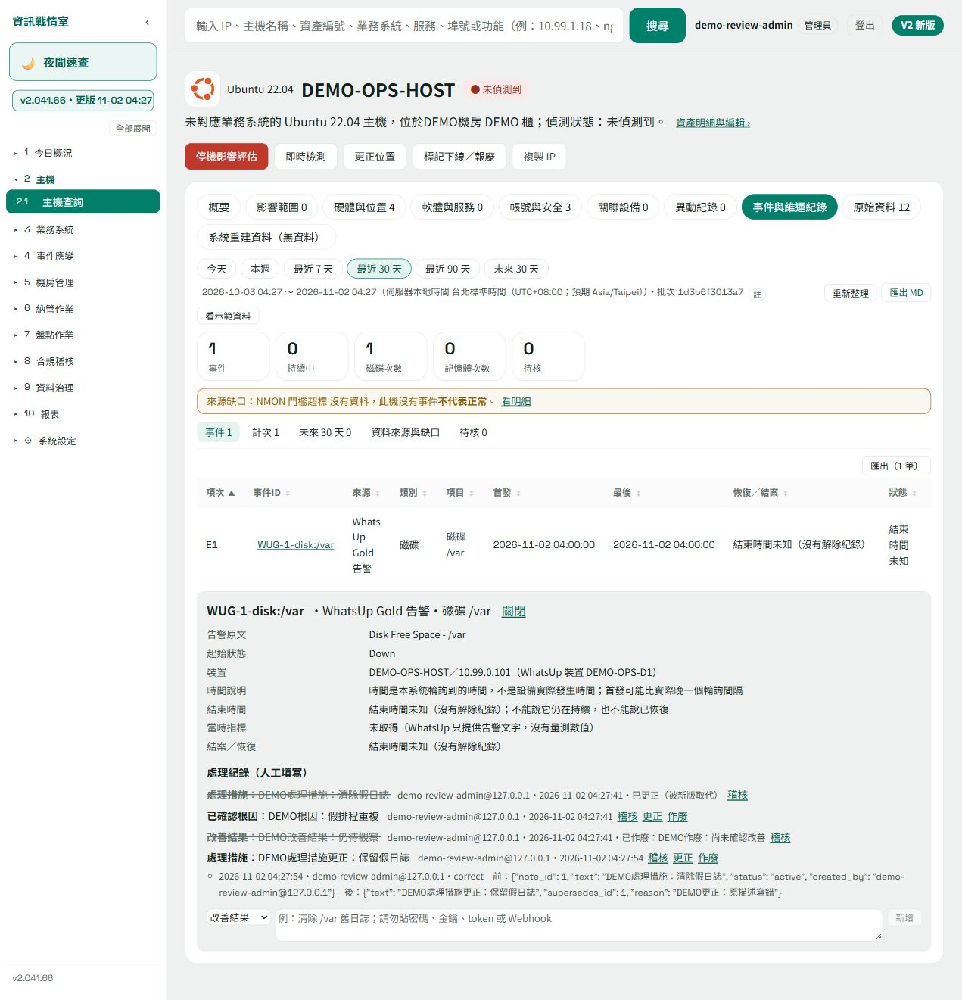
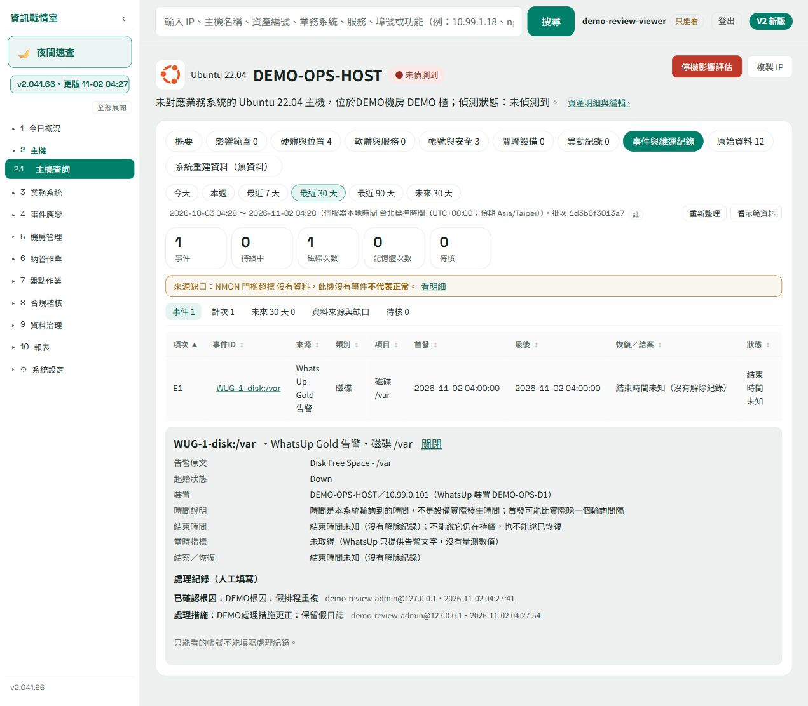

維運紀錄：新增、更正、作廢與稽核
本機假資料示範1. 記錄處理經過，保留修訂依據
- 進入主機履歷的「事件與維運紀錄」，核對事件、時間與來源，再展開該事件。
- 依實際處理情況新增「處理措施」、「根因」或「改善結果」。示例的改善結果為「仍待觀察」，不能當作已恢復。
- 原記錄有誤時按「更正」，填寫新內容與更正原因。新記錄取代有效內容，原文仍保留為已更正紀錄。
- 尚未確認的改善結果可按「作廢」並填原因。原文保留為已作廢，有效改善結果回到未填；不是直接刪除歷史。
- 管理員開啟「稽核」查看改前、改後、操作帳號與時間，核對修訂是否符合處理事實。

處理紀錄與監控告警分開保存。新增措施、填根因或作廢改善結果，均不代表告警已解除；本示例的原告警沒有被改寫。
2. 唯讀角色查看有效紀錄
以唯讀角色開啟同一事件，可查看目前有效的處理措施與根因；本次畫面沒有新增、更正、作廢或稽核按鈕。
| 角色與畫面 | 本示例已驗範圍 |
|---|---|
| 管理員 | 新增、更正、作廢、查看修訂歷史及改前改後稽核。 |
| 唯讀角色 | 查看2筆有效紀錄，沒有寫入與稽核按鈕。未宣稱可看全部已更正／已作廢歷史。 |
